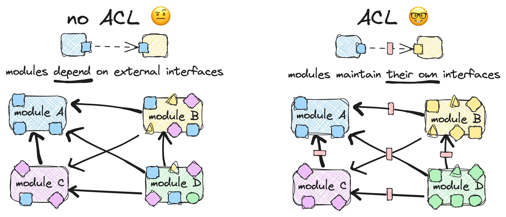

Anti-Corruption Layer in Frontend Development
Chain like fence by Serena Tyrrell
Wednesday 9 October 2024 • 📚 11 min read • back to Blog • edit on Github
As our frontend applications grow, more challenges arise that don't exist unless a certain scale and complexity is reached. One of them is: how much is your code tightly coupled with the objects you fetch from external sources? This includes server APIs, but also communication with other micro-apps within a MicroFrontend architecture.
Whenever a response shape changes (JSON, interface, whatever), how many components, functions, services etc. do you have to update?
Have you ever discouraged, or even rejected an API refactor due to the amount of work required on client-side to adapt to the refactor?
Table of Contents
- The Problem Space: Model Leak
- The Solution Space: Anti-Corruption Layer
- ACL tailored to Frontend
- Summary
Let's understand the problem first.
The Problem Space: Model Leak
Each deployable piece os software (a monolithic backend or frontend, a microservice, a microfrontend etc.) is using some models that it relies on. Frontend UI components, services, utility functions etc. - they're all using some domain entities (e.g. Order, Product, etc. depending on your business) in order to display their data or to
allow some user interactions. These entities are defined using interfaces, types, classes etc.
In the long run, following critical questions arise:
Who owns the Model?
Who is in charge of changing the model your codebase uses? Is it a separate team? Or even an external vendor?
Do they just announce the model change - and you just have to adapt to it, given a rather short period of time (otherwise you'd be the blocker, disallowing the entire platform to move forward)?
Models shared across a system are parts of a Contract. Defining who is the owner of the contract enables making proper architectural decisions.
What is the team organization / org. structure?
The bigger the organization (i.e. more development teams), the more the whole topic matters.
According to Conway's Law, the codebase would reflect the organizational structure. And by strengthening coupling between each other's models, we introduce more troublesome frictions between teams 🫤.
On the other hand: the smaller the development dept., the less friction is expected. Especially, within a single dev team or a relatively small project, there's no need to introduce artificial boundaries that would reduce coupling. Make sure we don't try to solve problems that don't exist 😉.
How frequently does the model change?
The less stable the contract/model is, the more the whole topic matters. The more frequently the model changes, the more time would be needed to adapt to the changes.
So if I consider my API contract stable, shall I stop reading? 😜
Practice proves, that - truism alert(!) - we can't effectively foresee the future 😔 (unless you do and you can prove it - then contact me immediately. And hence, if we're ignoring the fact that our codebase is tightly coupled to an external model that we don't own, then we limit the possibilities of improving the contract in the future. Or even freeze it in extreme cases (too much code to adapt, too expensive, case closed).
A significant shift in business requirements might require a change of the contract. Even if you consider your API Contract relatively stable, can you be sure that this will never happen?
What is the contract versioning strategy?
Most probably, when providing a new model shape, the old is also available for some time, e.g. via versioning. This can be achieved e.g. in REST APIs, hopefully:
- via HTTP Headers, not URLs 🤦
- per resource, not per entire API 🤦🤦
Versioning is a must-have in Distributed Systems, in order to keep each element independently deployable, often in the following form:
- (starting point) old contract provided, old contract consumed
- old + new contract provided (deploy), old contract consumed
- old + new contract provided, new contract consumed (deploy)
- new contract provided (deploy), new contract consumed
Of course, this pattern introduces overhead - it's broken into 3 steps, each finished in a separate deploy. But it's the price we have to pay for team independence - this way nobody enforces other parties to synchronize with each other. If anything happens, roadmap is changed, work is rescheduled etc. the process will just take longer. But one team will NOT make another fail because of that. And the bigger your system is, the more critical this aspect becomes.
Nevertheless, can you see that this is orthogonal to whether your codebase is tightly coupled with a contract? Effective versioning allows you to postpone adapting new versions, but it doesn't guarantee reducing coupling, if you still tightly depend on somebody else's model.
At this point we know what problems we want to solve/reduce and we can proceed to the solution.
The Solution Space: Anti-Corruption Layer
Technically, ACL is a piece of code that maps the model that you don't own into a model that you do own. All in all, if the external contract changes, the only thing you shall change is this mapping code. Your local codebase is expected to use your own model - and this doesn't change no matter how many external contract changes take place
Architecture-wise, it's a thin layer put at the point where two independent elements integrate with each other. The layer effectively reduces coupling across different pieces of the system and/or teams.

This pattern originates from Domain-Driven Design and works extremely well with the Ubiquitous Language concept, but it's not limited to it - ACL makes sense in many different approaches and architecture styles.
Avoiding "God Classes"
A God Class is an anti-pattern, unfortunately still commonly used 😒. It's a class (could be an object, interface etc.) which is used in too many places, and hence has too many responsibilities, technically: has too many methods and too much data. It's a monster 👹 that has possessed control and knowledge about too many aspects of a system - and is already too big to be effectively broken into smaller, SRP-friendly pieces.
A typical example of a God Class is a User entity. How come 😵? A User entity could take part in lots of different features and/or business processes, e.g.:
- a User can submit an Order and access their Order History
- a User can define their preferences, Favorite products, each User would have different Recommendations on top of them
- a User manages their Shipment and Payment details
- a User has their separate Discounts, based on Order History
etc.
Now imagine you put all this information into a single class/interface. Let's assume that each order, shipment, payment, catalogue (and many more) modules are being maintained by separate teams. We can clearly see that a change made by one team can affect others.
(BTW, do you have a 1k+ LoC component in your frontend codebase that does too much? 🫠 is that the one no one wants to touch? 😛)
The reason for introducing a God Class is lack of clear module boundaries. The model, the semantics, the knowledge of one module leaks to another, hence strengthening coupling.
Show me the code
Implementation is really straightforward. It's the reasoning that matters in case of ACL. Technically, we're just introducing e.g. a mapping function, that can:
- map an array of
X's into an array ofY's - map a dictionary (
{ str: value }) ofX's into a dictionary ofY's - map an array into a dictionary, because externally the dataset is an array, but we need to optimize for fast lookups by IDs (hence using a dictionary/hashmap) etc.
In a React/Vue-based application using native fetch (or axios), ACL could look like the following:
// the external contract 👇
import { EmployeeDTO } from './dto/EmployeeDTO';
// the local model 👇
import { EmployeeModel, employeeDTOToModel } from './model/EmployeeModel';
export const getEmployees = (params: unknown): Promise<EmployeeModel[]> => {
return fetch(`API.COM/employees` + new URLSearchParams(params).toString())
.then(res => res.json())
.then(items => items.map(employeeDTOToModel))
}
import axios from 'axios'
export const getEmployees = (params: unknown): Promise<EmployeeModel[]> => {
return axios.get<Employee[]>(`API.COM/employees`, { params })
.then(res => res.data)
.then(items => items.map(employeeDTOToModel))
}
In Angular, it could look like the following:
// the external contract 👇
import { EmployeeDTO } from './dto/EmployeeDTO';
// the local model 👇
import { EmployeeModel, employeeDTOToModel } from './model/EmployeeModel';
import { map } from 'rxjs/operators';
export class EmployeesHTTPService {
#http = inject(HttpClient)
getEmployees(params: unknown): Observable<EmployeeModel[]> {
return this.#http.get<EmployeeDTO[]>(`API.COM/employees`, { params }).pipe(
// this is the ACL mapping 👇
map(employeeDTOToModel)
)
}
(sidenote: for simplicity reasons, I'm ignoring hypothetical runtime validation using tools like zod)
Deadly simple implementation, isn't it?
As you can see, the core difficulty is drawing the boundaries of ownership of the semantics, i.e. I need to make that external request, but I'm not gonna let the response interface leak into my code and spread throughout multiple files.
ACL tailored to Frontend
When adapting ACL to frontend applications, the first thing we should take a look at are our modules:
- their hierarchy
- their relationships
- their boundaries
Example module structure
Let's see an example of a domain-driven directory structure:
src/
employees/
api/
EmployeesHTTP.ts
DepartmentsHTTP.ts
model/
EmployeeModel.ts // 👈 EmployeeModel
state/
EmployeesSlice.ts
EmployeesSelectors.ts
ui/
EmployeesList.tsx
EmployeeDetails.tsx
products/
api/
ProductsHTTP.ts
model/
ProductModel.ts // 👈 ProductModel
state
ProductQueries.ts
CreateProductStateMachine.ts
ui/
CreateProductForm.tsx
ProductDetails.tsx
ProductSearch.tsx
finances/
api/
FinancesHTTP.ts
model/
MonthlyExpenses.ts
MonthlyIncomes.ts
// 👆 they include both Employee and Product data
// yet in a DIFFERENT shape (different model)
...
shell/
communication/
PubSub.ts
External contract
First place where ACL is implemented is the server API response mapping to a local model:
EmployeeDTO->EmployeeModel, implemented withinEmployeeHTTP(the mapper could be considered an implementation detail of this file)ProductDTO->ProductModel, etc.
Note: where is the external API's Contract? Depending on the situation, it could be located in:
node_modules/your-private-package-with-contractpackages/api-contractwithin a monorepo- yet another place
Hopefully, contract synchronization is automated 🙃 (e.g. using Open API, json-schema-to-typescript or similar software)
MicroFrontends Communication
Another place to implement ACL is where the MFEs interact with each other.
NOTE: cross-MFE communication should be:
- reduced to bare minimum
- never direct (use a mediator, such as a Pub-Sub / Message Broker)
The shell application (host of all MicroFrontends) allows registered MFEs to dispatch and subscribe to messages. Each MFE could be interested in a change, e.g. what User is logged in. But also, each MFE should keep the User data in its own model.
For exactly the same reasons as discussed above.
Consequences
The files are organized by business subdomains.
One one hand, there might be (quite some) code repetition. We're dealing with Employees in potentially multiple places.
Advantages
- the code is highly modular and we're limiting cross-module dependencies to bare minimum
-
we can automatically disallow cross-module dependencies using Nx Module Boundaries or
no-restricted-imports - this approach is both modulith-friendly and microfrontend-friendly; whatever your future application is going to look like, such codebase is easy to split
- works well with monorepos as well
- no anti-patterns such as God Classes
Disadvantages
- if applied prematurely, such approach could end up as over-engineering
- requires a pro-active approach to analyzing responsibilities and semantics of certain modules (business subdomains)
Incremental Adaption
ACL is not a 0-1 approach, fortunately 🙂. If your codebase is full of DTOs directly used everywhere (we already know what this could lead to...), then we can introduce ACL gradually:
- whenever there is a change to an external model (API contract), introduce the local model along with the mapping function; switch the UI components/services/etc. to using the local model
-
visualize a graph of your dependencies, e.g. using Nx graph or
madge -
adapt automation (Nx Module Boundaries and/or
no-restricted-imports) gradually
Adapting ACL into an existing codebase will very likely pull the skeletons out from the closet. Most probably, you have unwanted dependencies across your modules that you're not yet aware of.
Summary
As you can see, the implementation is no challenge at all. That's not what matters.
What matters is: does ACL fit into your project context, i.e.
- team/org size
- project complexity
- frequency of model changes
- relations between teams and/or business subdomains
- architecture flexibility (adapting monorepos, microfrontends, etc)
- enforcing codebase to remain modular.
The whole difficulty lies in choosing the proper heuristics (discussed throughout the whole article above) helping us to estimate whether the benefits would outweight the costs.